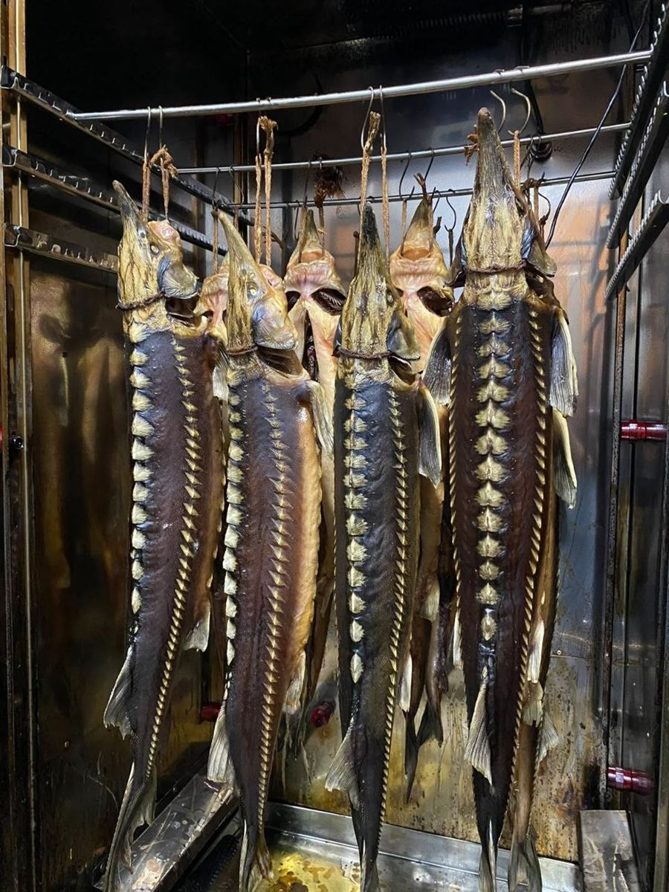
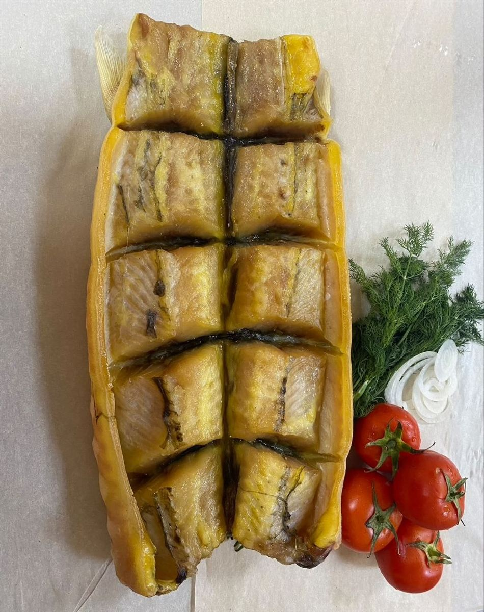
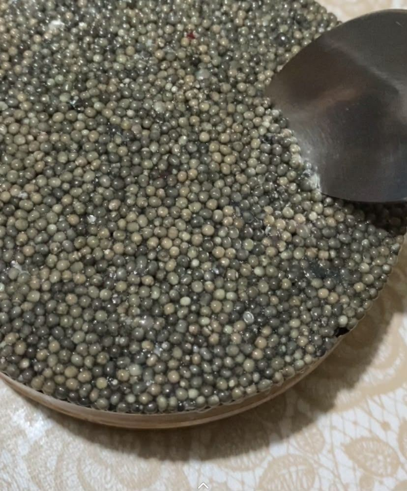
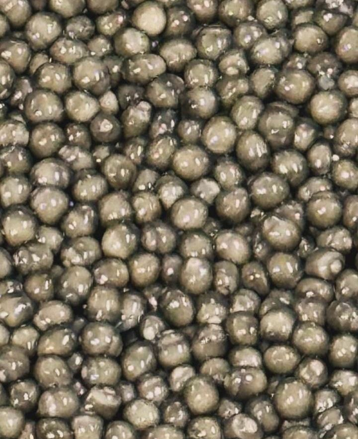
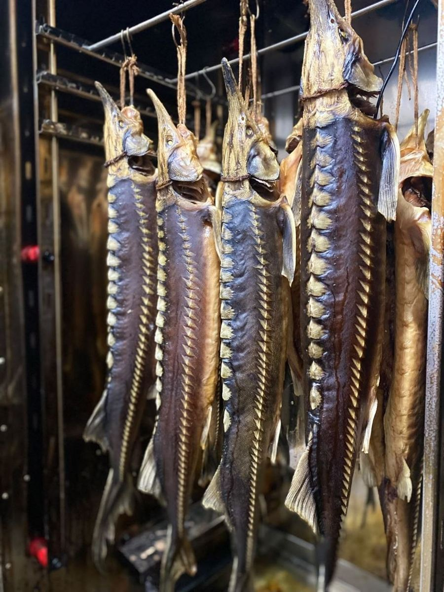
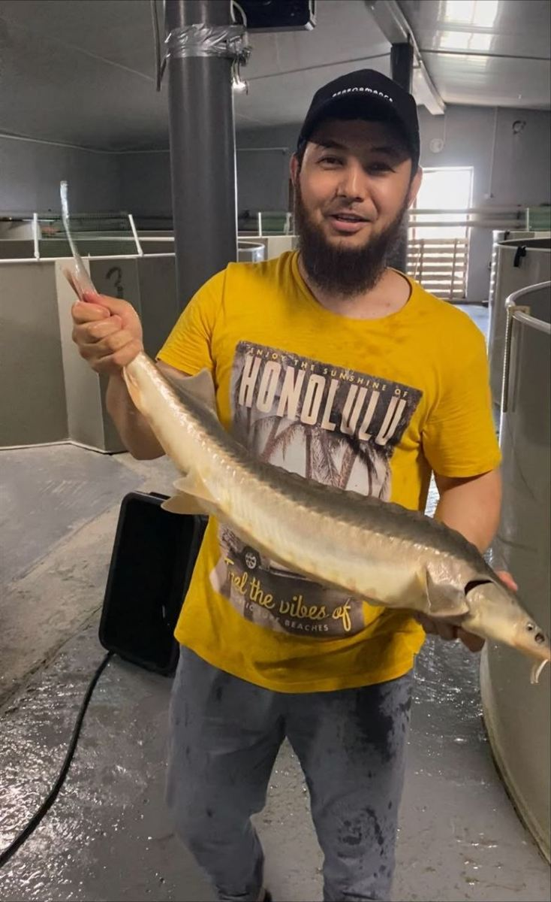

Астрахань, с 2020 года
Копчёный осётр и икра из Астрахани
Осётр, балык, икра стерляди и осетровая икра с Нижней Волги. Соберите заказ в корзине и отправьте его в WhatsApp или Telegram.
Прайс
Копчёного осетра продаём только целой рыбой, около 2 кг. Балык от 0,5 кг, икру банками по 100 г. Точный вес и сумму продавец подтвердит в переписке.
Как выглядит наш осётр
Не картинки из интернета, а наши снимки: коптильня, балык, икра.
-
КоптильняВидео, 9 секунд -

Осётр копчёныйЦелая рыба, около 2 кг -

Балык осетровыйНарезка порциями -

Икра стерлядиБанка 100 г -

Икра осетроваяБанка 100 г -

После копченияЗолотистая кожа и жучки -

Живой осётрТаким он бывает до копчения
Мы астраханцы
- С 2020 года
- работаем под именем OSETR FISH
- Аквакультура
- осётр с рыбного хозяйства, а не из дикой Волги
- Володарский
- Астраханская область, ул. Садовая, 46Б
Наши отцы и деды всю жизнь были связаны с рыбой, поэтому что такое настоящая рыбка, мы знаем не понаслышке. Раньше осетра ловили прямо в Волге, его было очень много.
Сейчас мы продолжаем их дело, но с новыми технологиями и бережно к природе. Выбирая осетра из аквакультуры, вы помогаете сохранить диких осетровых.
Хотим, чтобы вы попробовали настоящие деликатесы из осетровых и получили от них только хорошие впечатления.
Написать нам во ВКонтактеКак заказать
- 1
Положите в корзину
Выберите, сколько рыбы и банок икры нужно. Корзина сохранится, если закрыть страницу.
- 2
Отправьте заказ
Кнопка WhatsApp откроет чат с готовым текстом заказа. В Telegram текст скопируется, останется вставить его в чат.
- 3
Договоритесь о деталях
Продавец ответит, уточнит вес, сумму, доставку и оплату.
Заказ уже написан за вас
Корзина сама собирает сообщение продавцу: что, сколько и на какую сумму. В окне чата видно, что придёт продавцу. Остаётся нажать «Отправить».
Вопросы и ответы
Сколько стоит копчёный осётр в Астрахани?
У нас копчёный осётр стоит 3 300 ₽ за килограмм. Продаём только целой рыбой, около 2 кг, поэтому одна рыба выходит примерно в 6 600 ₽. Точный вес и сумму продавец подтвердит в переписке. Страница копчёного осетра
Сколько стоит килограмм копчёной осетрины?
Целый копчёный осётр у нас стоит 3 300 ₽ за кг, балык осетровый (спинка нарезкой) 5 500 ₽ за кг, его можно взять от 0,5 кг. Страница балыка
Сколько стоит икра стерляди и осетровая икра?
Икра стерляди 4 400 ₽ и осетровая икра 4 600 ₽ за банку 100 г. Можно взять несколько банок. Икра стерляди, икра осетровая
Где купить копчёного осетра в Астрахани?
На этом сайте: положите осётр, балык или икру в корзину и отправьте заказ в WhatsApp или Telegram. Можно сразу написать или позвонить: +7 962 751-19-99. Продавец ответит и договорится с вами, как получить заказ.
Чем балык отличается от копчёного осетра?
Копчёный осётр мы продаём целой рыбой, около 2 кг. Балык — это спинка осетра, её продаём нарезкой на вес, от 0,5 кг. Балык удобнее на нарезку к столу, целая рыба — когда нужно много или на праздник.
Чем икра стерляди отличается от осетровой?
Стерлядь — небольшая рыба из семейства осетровых, у её икры мелкое зерно. У осетровой икры зерно крупнее. Обе продаём банками по 100 г.
Как сделать заказ?
Выберите товары и вес в прайсе и положите в корзину. Корзина сама соберёт сообщение продавцу с суммой, останется нажать «Заказать в WhatsApp» или «Заказать в Telegram». Продавец ответит, уточнит вес, сумму, доставку и оплату.
Где нас найти
п. Володарский, ул. Садовая, 46Б
Как получить заказ, забрать или привезти, договоримся в переписке.